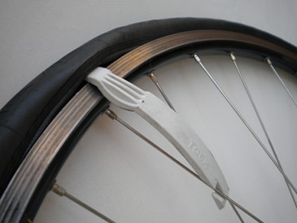
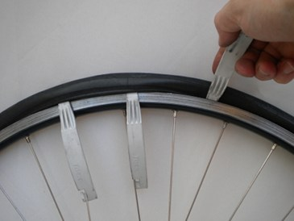
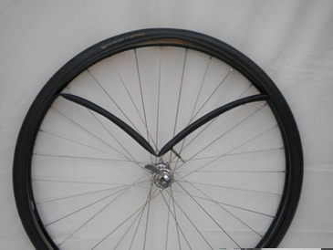
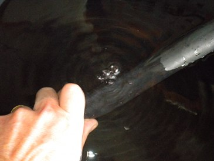
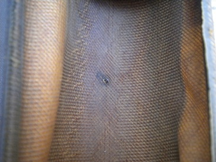
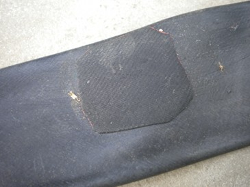
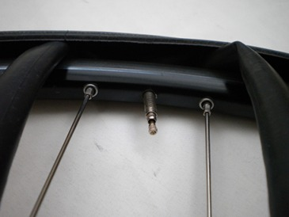
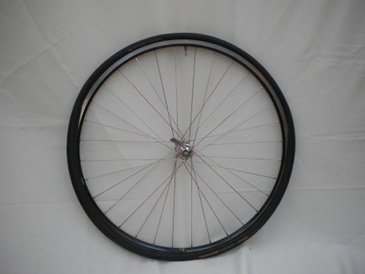

| Puncture/Flat tyre |
|
| Written by BikeFixer | ||||||||||||||
Summary |
||||||||||||||
|
||||||||||||||
Remove wheel and deflate tyre: Remove the wheel. (Rear wheels can be tricky - shift up through the gears to get onto the smallest cog and then flip back the upper cog of derailleur back as you slide the wheel out of the frame). Deflate the inner tube (press down on the middle of the valve). Prise off one side of tyre: Starting diametrically opposite the valve, insert the levers under the bead of the tyre and gradually prise off one side of the tyre from the rim. For the first 4 inches or so, insert the levers close together. Once the first 4 inches are off, the rest comes off easier. Pull out inner tube: Push the valve of the inner tube up through the rim, and then pull the whole inner tube out of the tyre. Take care not to puncture the inner tube on sharp bits on the rim, or to pinch it between tyre levers. |
||||||||||||||
|

Insert tyre lever |

Prise bead off rim |

Pull out inner tube valve first |
||||||||||||
Find puncture: Inflate the inner tube, and listen for the 'hiss' of escaping air, or run your hands around the tube, and feel for its soft rush. If this fails, immerse the inflated tube in water and look for a trail of bubbles. Can't find the puncture? It could be the valve, particularly if you had to ride on a completely flat tyre, or the tube is old or cheap. Mark the location: Dry the tube and mark the puncture, for example, with some chalk. Don't get another puncture for the same reason: This can happen when you fit the new inner tube. So,
|
||||||||||||||
|

Bubbles locate puncture |

Check tyre for sharp objects |
|||||||||||||
Buy kit? |
||||||||||||||
|
||||||||||||||
Prepare tube: Clean and roughen the area around the puncture. Add rubber: Apply a large blob of rubber cement. Spread the cement around, so that it covers an area slightly larger than patch. Wait for the solution to begin to dry and then add another blob. Apply patch: stick the patch down all around the puncture - no flapping edges to get caught. Leave it to bond.
|
||||||||||||||
 Apply rubber solution |

Apply patch |
|||||||||||||
Replace tube: Press one bead of the tyre onto the wheel rim, so that one side of the tyre is on the wheel, but you still have access to the inside of the tyre. Slightly inflate the inner tube - enough to give it shape, but not firmness. Then pass the valve of the inner tube through the hole in the rim. Working away from the valve and around the tyre, push the inner tube into the tyre, taking care not to twist or scratch the inner tube as you go. Fit tyre: When the inner tube is completely on the wheel, check that the valve is protruding nicely through its hole - at 90 degrees to the rim, not at an angle. Starting at the valve again, work around the wheel in both directions pressing the remaining tyre bead onto the rim with your thumbs. Take care not to snag the inner tube inbetween rim and tyre. The last few inches of the tyre will become very stiff, but resist the temptation to use the tyre levers to lever the tyre back on - the inner tube is easily pinched between the two.
When the tyre is finally on, pat around it to make sure the inner tube and tyre are sitting comfortably on the rim. Then inflate to half pressure, before remounting the wheel ... you're FIXED! (Fully-inflated tyres may not fit through your brakes, even if you open them up) |
||||||||||||||
|

Replace inner tube valve first |

Press tyre bead back onto rim |
 Take care not to pinch inner tube |
||||||||||||
Punctures are best patched at home: At the side of the road, it is much easier to just fit a new inner tube. So:
Essential for rides out of town. |
||||||||||||||